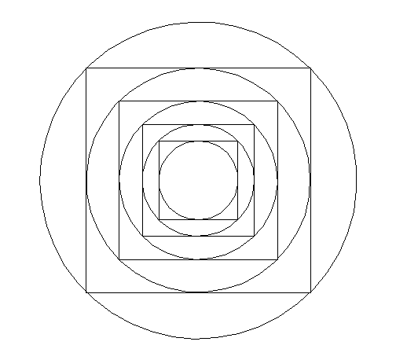

When you have a diagram, it is sometimes helpful to Fill in all the Information you Can, even if you think it has nothing to do with the problem you have to solve. This is another example of tinkering. Doing this will help you to see patterns and to notice things about the diagram that you might not have noticed otherwise. It is a wonderful thing to do when you are stuck on a problem.
The radius
of the smallest circle is one unit. What is the ratio of
the area of the largest circle to the area of the smallest
circle?

In the problem above, rather than trying to figure out the ratio of the two areas immediately, it makes more sense to figure out some smaller, manageable thing about the figure, and see where that leads us. A clear place to start is with the smallest circle. Once we find the area of that circle, we can then find the square that surrounds it. Can we then find the area of the second largest circle? By looking at the smallest parts, we can see the pattern which allows us to solve the original problem.
In your previous experience with geometry, you probably
learned some basic facts about angles, lines, and triangles.
For instance, two angles that form a line add up to 180
degrees, and so do the three angles of a triangle. You may
also know that, in an isosceles triangle, the angles opposite
the sides that are the same length are also the same. These
facts will help you with many of the problems that
follow.
The two
marked lengths are congruent. Find the measures of all the
angles in
the figure.

Find the
measures of all the angles
in the figure.

The area of this hexagon is 60. Find the product of the lengths of the segments AB and AC.
A smaller
circle has radius 2 and a larger circle has radius 3. A and D
are points on the tops of these circles. The circles are
touching in the middle, as shown.
Find the distance from A to D.
Given that the four marked lengths are congruent, find x.
In the following diagram, BC=5, AC=4, and the circle B has four times the area of circle A. Find the area of circle C.
Find .

Draw a square with vertices A, B, C, and D, in that order. Then draw an equilateral triangle with vertices A, B, and E, where E is a point outside the square. Connect points E and C with a line segment. Find the measure of angle ECB.
Repeat the previous problem, but this time place point E inside the square. Again, find the measure of angle ECB.
Find the measure of angle ABC.
Prove that the large
triangle below is a right triangle. It may help to label some
angles x and other angles y (give angles the same letter if
you know they are the same!)
Find .
Find \[x\] .
Find \[x\] R"{ .
Find the dimensions of a rectangular solid where the 12 edges and both diagonals on all 6 faces are integers.
The triangle below is equilateral. Find the area of the circle.
The triangle below is the
famous “3-4-5” right triangle; famous because it is one
of the simplest triangles that satisfies the Pythagorean
theorem: \[{3^2} + {4^2} = {5^2}\] .
As you can see, the 3-4-5- right triangle has been placed in
a rectangle. What is the height of the rectangle?
Three squares are lined up along the x-axis as shown, and the points with coordinates (0,4) and (21, 12) are labeled accordingly. Find AB. (MML 10/30/90)